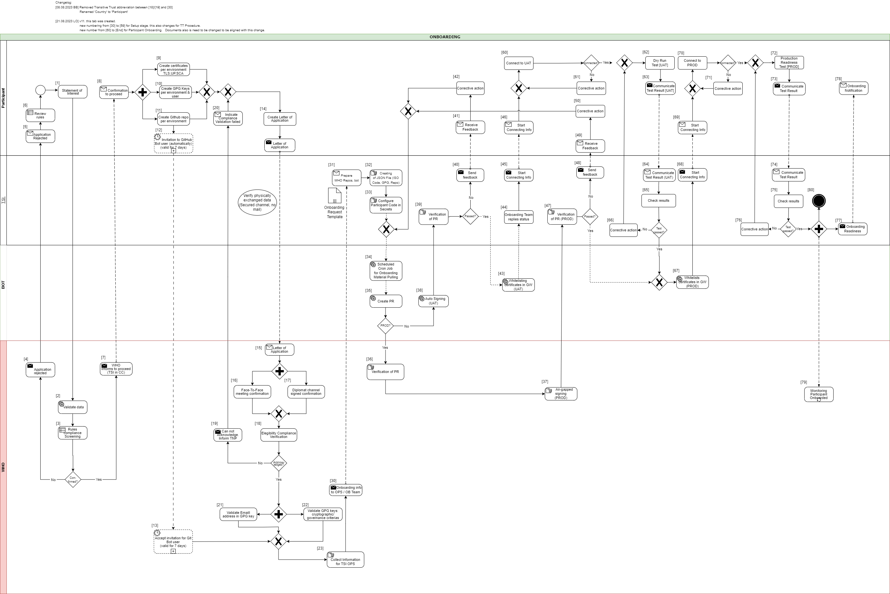

ترجمة آلية — لم يراجعها أي شخص
تُرجمت هذه الصفحة آليًا. لم يراجع أي شخص هذه الترجمة أو يعتمدها، وقد تحتوي على أخطاء. الصفحة بلغة المصدر هي النص المرجعي. اقرأ النص الأصلي (بالإنجليزية)
Machine translation — not reviewed by a person
This page was translated automatically. No person has reviewed or adjudicated this translation, and it may contain errors. The source-language page is the authoritative text. Read the original (English)
عملية الانضمام
يصف ما يلي عمليات الانضمام إلى الشبكة العالمية لإصدار الشهادات الصحية الرقمية (GDHCN).
تدير أمانة GDHCN عملية الانضمام وخطابات الطلب المقدَّمة من المشاركين المؤهَّلين في GDHCN للاتصال بشبكة الثقة بوصفهم أطرافًا موثوقة. وتُسلَّم سجلات الانضمام المُعَدّة إلى أمانة GDHCN مع طلب معالجة الانضمام التقني للطرف الموثوق. ويُفضي الطلب الناجح تنظيميًا وتقنيًا إلى تأكيد، ويمكن عندئذ للمشارك في GDHCN الاتصال بشبكة الثقة بوصفه طرفًا موثوقًا.

يُرجى مراجعة:
- المفاهيم التي يقوم عليها وصف عمليات الانضمام هذه، بما في ذلك الوصف العام لشروط المشاركة؛
- نظرة عامة على الانضمام التي تقدّم لمحة عامة عن عملية الانضمام؛
- حوكمة الشهادات التي تصف حوكمة شهادات المفاتيح العمومية؛
ينبغي للمشارك المؤهَّل في GDHCN استكمال قائمة التحقق الخاصة بالانضمام التي تتضمن مقاطع فيديو إرشادية خلال عملية الانضمام.
بعد التقييم الإيجابي لخطاب الطلب وتقييم استمارة التقييم التقني، ستقوم منظمة الصحة العالمية (WHO) بما يلي:
- تقديم المواصفات التقنية ومعلومات التهيئة اللازمة لربط أنظمتهم الخلفية ببوابة شبكة الثقة (TNG) التابعة لـ GDHCN لدى منظمة الصحة العالمية (WHO)
- دعوة المشارك في GDHCN إلى تسجيل شهادات الإنتاج الخاصة به وترقيتها إلى بيئة الإنتاج.
ينبغي اعتبار الإطار الإداري والتشغيلي لـ GDHCN المصدرَ المرجعي للتعاريف والمفاهيم في حال وجود أي تعارض.
نظرة عامة على عملية الانضمام
تنقسم عملية الانضمام الكاملة إلى GDHCN إلى ثلاث مراحل رئيسية وفقًا للشكل التالي:
الشكل 1: مراحل الانضمام
إعداد تقديم مواد المفاتيح
لإنشاء اتصال ببوابة شبكة الثقة (TNG) والتحول إلى مشارك في GDHCN، يتعيّن على المشارك إعداد مواد المفاتيح الخاصة به كي نُدرِجها في بوابة الربط. وتتطلب هذه العملية خبرة تقنية لإعداد شهادات X.509، التي تُخزَّن في مستودع GitHub يملكه المشارك لغرض التقديم.
لبدء الانضمام، يتعيّن على المشاركين إعداد تقديم مواد المفاتيح.
يُرجى اتباع الخطوات الموضَّحة في: tng-participant-template وREADME.md.
لمزيد من المعلومات، يمكنك الاطلاع على الموارد التالية:
مخطط يقدّم لمحة عامة عن الخطوات اللازمة لبدء الانضمام الكامل.

يتضمن المستند وصفًا تفصيليًا للمهام التي ينبغي أن يؤديها المشارك. ملاحظة: يُرجى ملاحظة أن عمل المشارك يبدأ عند الخطوة 8 وينتهي عند الخطوة 14.
بعد استلامنا لتقديمك وإتمام إدراج المواد بنجاح، سنتواصل معك لبدء المرحلة التالية من الاختبار.
إجراء اختبارات القبول
بعد أن نتواصل مع المشارك بشأن نجاح الانضمام، ينبغي أن يكون اختبار الاتصال أول إجراء في العملية. وعند إنشاء الاتصال بنجاح، ينبغي للمشارك تنفيذ اختبارات القبول الخاصة به. ويجب إجراء اختبارات القبول هذه في بيئة اختبار مخصَّصة تُسمّى بيئة اختبار قبول المستخدم (UAT)، وهي متصلة بالفعل بمشاركين آخرين في شبكة الثقة تقدّموا بطلبات الانضمام.
يمكن استخدام واجهة برمجة التطبيقات (API) لبوابة شبكة الثقة للتفاعل مع الحفاظ على الوظائف الكاملة لبوابة EU DCC. وإضافةً إلى ذلك، تجري إضافة خدمات متنوعة لمعيار HL7 FHIR.
يتعيّن على المشارك [إبلاغنا بنتائج] اختباراته، وسيُجرى فحص للجودة على النتائج المُبلَّغ عنها، كي نتمكن من التحقق من وجود أي مشكلات أو اعتماد جاهزيته للطرح في بيئة الإنتاج.
بدء التشغيل الفعلي في بيئة الإنتاج
بعد إتمام مرحلة القبول بنجاح والموافقة عليها، يمكن الشروع في عملية بدء التشغيل الفعلي في بيئة الإنتاج. ويشمل ذلك تقديم مواد المفاتيح المخصَّصة لبيئة الإنتاج (كما هو مبيَّن في المرحلة 1)، يليه الانضمام إلى بيئة الإنتاج. وسيُخطَر المشارك فور نجاح بدء التشغيل الفعلي في بيئة الإنتاج.
متطلبات طلب الانضمام
يُدعى المشاركون المؤهَّلون في GDHCN إلى تقديم طلب موقَّع يتضمن:
- المعلومات اللازمة للاتصال ببيئة الإنتاج
- إقرار بالامتثال لشروط المشاركة.
يجب أن يتضمن طلب المشارك في GDHCN على الأقل ما يلي:
- شهادة TNPSCA واحدة أو أكثر، وشهادة TNPTLS واحدة، وشهادة TNPUP واحدة؛
- بيان بشأن قبول المفاتيح والعمليات الخاصة بالولايات القضائية الأخرى المُدرَجة في قوائم بوابة الربط؛ و
- جهات الاتصال - الممثل التقني، والممثل القانوني، وممثل مالك الأعمال.
خطابات الطلب
خطابات الطلب - DDCC
DDCC: نطاق الثقة الخاص بالتوثيق الرقمي لشهادات COVID-19
- خطاب الطلب الخاص بـ DDCC باستخدام الثقة المتعدّية
- خطاب الطلب الخاص بـ DDCC وفق عملية الانضمام الكاملة
- خطاب الطلب الخاص بـ DDCC وفق عملية الانضمام الكاملة - النسخة العربية
- خطاب الطلب الخاص بـ DDCC وفق عملية الانضمام الكاملة - النسخة الصينية
- خطاب الطلب الخاص بـ DDCC وفق عملية الانضمام الكاملة - النسخة الفرنسية
- خطاب الطلب الخاص بـ DDCC وفق عملية الانضمام الكاملة - النسخة الروسية
- خطاب الطلب الخاص بـ DDCC وفق عملية الانضمام الكاملة - النسخة الإسبانية
خطابات الطلب - PH4H
- خطاب الطلب الخاص بـ PH4H - النسخة الإنكليزية
- خطاب الطلب الخاص بـ PH4H - النسخة الإسبانية
خطابات الطلب - IPS للحج
خطاب الطلب - بوابة شبكة الثقة
- خطاب الطلب الخاص ببوابة شبكة الثقة - النسخة الإنكليزية
- خطاب الطلب الخاص ببوابة شبكة الثقة - النسخة العربية
- خطاب الطلب الخاص ببوابة شبكة الثقة - النسخة الفرنسية
- خطاب الطلب الخاص ببوابة شبكة الثقة - النسخة الصينية (الماندرين)
- خطاب الطلب الخاص ببوابة شبكة الثقة - النسخة الروسية
- خطاب الطلب الخاص ببوابة شبكة الثقة - النسخة الإسبانية
مهام الأمانة
يجب على الأمانة الاضطلاع بالمهام التالية لإرساء عملية الانضمام:
- ستُثبِت منظمة الصحة العالمية (WHO) الهوية التنظيمية وجهة الاتصال في عملية تجري خارج الشبكة، من خلال مكاتبها القُطرية في الدول الأعضاء، بالتواصل مع الجهات المختصة في وزارات الصحة أو وكالة الصحة العامة المعنية.
- توفير قناة آمنة للمشارك في GDHCN لتسليم طلبات آمنة وجديرة بالثقة تتضمن معلومات SCA و/أو DID؛
- إنشاء زوج مفاتيح وتأمينه (مرسى الثقة) لتوقيع طلبات الانضمام/تأكيدها لدى بوابة الربط؛
- تسليم المفتاح العمومي لمرسى الثقة إلى عمليات بوابة الربط؛ و
- إحالة طلبات الانضمام إلى عمليات بوابة الربط.
تفاصيل عملية الانضمام
تصف هذه الصفحة عملية الانضمام إلى GDHCN (ما يُسمّى عملية الانضمام المستقبلية، FOP)، مرسومةً بلغة BPMN 2.0. وتحت كل رسم نصُّ الخطوات التي يعرضها. ويُحفَظ هذا النص في ملف Markdown بجانب كل ملف BPMN، مع قسم واحد لكل مهمة، وترتبط كل مهمة في الرسم بقسمها، بحيث تصدر الصفحة والرسوم عن مصدر واحد. والأرقام [n] هي أرقام الخطوات في الرسم الأصلي.
حيثما اختلف رسم عن نص، تكون المرجعية للنص: الإطار الإداري والتشغيلي لـ GDHCN أولًا، ثم نص الخطوة. ولا تشير الرسوم إلا إلى الوثائق؛ أمّا المتطلبات مثل أحجام المفاتيح فتَرِد في الوثائق التي تذكرها، ومن ذلك على سبيل المثال المتطلبات الخاصة بمفاتيح GPG.
نظرة عامة على عمليات الانضمام
يجري الانضمام على ثلاث مراحل. في المرحلة 1 يقدّم المشارك طلبه ويُتحقَّق من خطاب الطلب الخاص به. وفي المرحلة 2 يسجّل مشغِّل بوابة الربط مفاتيح المشارك، مرة واحدة لكل بيئة. وفي المرحلة 3 يتصل المشارك ببوابة الربط ويجتاز الاختبارات، أولًا في UAT ثم في PROD. وبعد الانضمام، يجوز للمشارك الانضمام إلى نطاق ثقة إضافي، أو تغيير مفاتيحه أو ممثليه، أو إنهاء مشاركته، ويجوز للمشارك المؤهَّل في GDHCN اقتراح نطاق ثقة جديد.
يحتوي كل رسم على مسبح لكل طرف (المشارك في GDHCN، وأمانة GDHCN لدى منظمة الصحة العالمية (WHO)، ومشغِّل بوابة الربط) ومسار لكل جهة فاعلة. والمهمة التي تحمل العلامة + تستدعي عملية أخرى: اخترها في الرسم للانتقال إلى تلك العملية. والبيئة (UAT وPROD وDEV إن استُخدمت) مُدخَل للعمليات التي تُنفَّذ مرة واحدة لكل بيئة.
يُوصى بشدة بما يلي:
-
استخدام شهادات صادرة عن سلطة تصديق (CA) عامة تتبع قواعد منتدى CAB
-
عدم إعادة استخدام أي شهادات عبر بيئات التجهيز المختلفة
العمليات مُدرَجة حسب المرحلة: المستوى الأعلى، المرحلة 1: تقديم الطلب والخضوع للتحقق، المرحلة 2: تسجيل المفاتيح، المرحلة 3: بدء التشغيل الفعلي، بعد الانضمام. والعملية التي يُعاد استخدامها لاحقًا تُدرَج ضمن المرحلة التي تُنفَّذ فيها أول مرة.
لتجربة الانضمام عمليًا، العب Join the Network، وهي محاكاة ينضم فيها بلد نموذجي إلى GDHCN خيارًا تلو الآخر. خطواتها هي العمليات الواردة في هذه الصفحة.
الجهات الفاعلة
كل مسار يمثّل جهة فاعلة واحدة، معرَّفة بوصفها ActorDefinition في هذا الدليل.
| الجهة الفاعلة | الدور في الانضمام |
|---|---|
| ممثل مالك الأعمال | يرسل بيان إبداء الاهتمام وخطاب الطلب؛ وقد يلتقي بمنظمة الصحة العالمية (WHO) شخصيًا (الإطار IX). |
| الممثل القانوني | قد يلتقي بمنظمة الصحة العالمية (WHO) شخصيًا لإيصال الخطاب (الإطار IX)؛ ويتلقى الإشعار بالتعديلات (XI.2). |
| المندوب الرسمي | مندوب في جمعية الصحة العالمية أو في اجتماع آخر لأحد الأجهزة الرئاسية لمنظمة الصحة العالمية (WHO) (الإطار IX). |
| ممثل مسؤول إدارة المفاتيح | يدير البنية التحتية للمفاتيح العمومية (PKI) الخاصة بالمشارك ويحتفظ بمفتاح GPG المذكور في الخطاب (الإطار IX). |
| الممثل التقني | يربط أنظمة المشارك ببوابة شبكة الثقة ويُجري الاختبارات (الإطار IX). |
| أمانة GDHCN | موظفو منظمة الصحة العالمية (WHO) المخوَّلون في أمانة GDHCN (الإطار V، VI). |
| ممثل منظمة الصحة العالمية (WHO) القُطري | يلتقي بالممثل في البلد ويرسل الخطاب عبر الحقيبة الدبلوماسية (الإطار IX). |
| مرسى شبكة الثقة | منظمة الصحة العالمية (WHO) بوصفها مرسى الثقة للبنية التحتية للمفاتيح العمومية (الإطار VI.6). |
| فريق العمليات | فريق العمليات لدى مقدِّم خدمة بوابة الربط (الخطوات [30]-[50]). |
| فريق الانضمام | فريق الانضمام لدى مقدِّم خدمة بوابة الربط (الخطوات [64]-[77]). |
| روبوت GitHub | مستخدم روبوت GitHub التابع لبوابة الربط الخاص بالبيئة (الخطوات [11]-[13]، [34]-[38]). |
| بوابة شبكة الثقة | بوابة شبكة الثقة (الإطار V.1). |
المستوى الأعلى
| العملية | وظيفتها | تستدعي | تستدعيها |
|---|---|---|---|
| ضمّ مشارك (المستوى الأعلى) | ضمّ مشارك في GDHCN إلى نطاق ثقة، على ثلاث مراحل: تقديم الطلب والتحقق، والإعداد، وبدء التشغيل الفعلي. | تقديم الطلب والخضوع للتحقق، بدء التشغيل الفعلي، تسجيل المفاتيح | - |
ضمّ مشارك (المستوى الأعلى)
ضمّ مشارك في GDHCN إلى نطاق ثقة، على ثلاث مراحل: تقديم الطلب والتحقق، والإعداد، وبدء التشغيل الفعلي.
الإطار V.4 وVI.5 وIX. تستدعي: تقديم الطلب والخضوع للتحقق، بدء التشغيل الفعلي، تسجيل المفاتيح. تستدعيها: لا عملية أخرى. ملف BPMN: GDHCN.ONB.bpmn.
المرحلة 1: تقديم الطلب والخضوع للتحقق
| العملية | وظيفتها | تستدعي | تستدعيها |
|---|---|---|---|
| تقديم الطلب والخضوع للتحقق | تقديم طلب الانضمام والتحقق من خطاب الطلب. | إعداد المفاتيح والمستودع، التحقق من خطاب الطلب | ضمّ مشارك (المستوى الأعلى) |
| إعداد المفاتيح والمستودع | إعداد المفاتيح والمستودع لبيئة واحدة. | - | تقديم الطلب والخضوع للتحقق، تغيير المفاتيح أو الممثلين |
| التحقق من خطاب الطلب | التحقق من خطاب طلب واحد، وتصحيحه عند الحاجة. | إيصال الخطاب عبر قناة آمنة | تقديم الطلب والخضوع للتحقق، الانضمام إلى نطاق ثقة إضافي، تغيير المفاتيح أو الممثلين |
| إيصال الخطاب عبر قناة آمنة | إيصال خطاب الطلب عبر قناة آمنة. | - | التحقق من خطاب الطلب، تغيير المفاتيح أو الممثلين |
تقديم الطلب والخضوع للتحقق
تقديم طلب الانضمام والتحقق من خطاب الطلب.
[1] يتعيّن على المشارك المؤهَّل في شبكة الثقة (TNP) تقديم بيان إبداء الاهتمام الخاص به [رابط إلى الاستمارة. [المستند 5] ] إلى gdhcn-support@who.int .
[2 – 3] تتحقق منظمة الصحة العالمية (WHO) من صحة جميع البيانات المقدَّمة، وتتأكد من امتثالها لشروط المشاركة في الشبكة الموثوقة لدى WHO (TOP 0 – 3) https://smart.who.int/trust/concepts.html فضلًا عن: معايير أهلية المشارك، والجهة الحكومية/الوكالة الصحية، وبيانات الاتصال بالجهات المُعتمِدة والأفراد. [انظر معايير الأهلية]. [المستند 16]
\ [المستند 6]
[4 - 5] في حال عدم الامتثال لقواعد الحوكمة لدى منظمة الصحة العالمية (WHO)، يُرفَض الطلب. ويُبلَّغ TNP بالرفض عبر البريد الإلكتروني.
[6] يتعيّن على TNP تعديل البيانات التي شاركها مع منظمة الصحة العالمية (WHO) وإعادة تقديمها.
[7] إذا أبدى الفريق التقني لمنظمة الصحة العالمية (WHO) رأيًا إيجابيًا، يُدعى المشارك المؤهَّل في شبكة الثقة إلى بدء عملية الانضمام. وتُدرَج المعلومات التالية:
- المواصفات التقنية ومعلومات التهيئة اللازمة لربط الأنظمة الخلفية المحلية ببوابة TNG التابعة لمنظمة الصحة العالمية (WHO)
- طلب تقديم المعلومات اللازمة للانضمام إلى البيئات المختلفة (UAT، PROD، DEV (اختياري))
- طلب الامتثال لشروط المشاركة في شبكة الثقة
[8] يتلقى TNP التأكيد والمعلومات التقنية اللازمة للاتصال بـ TNG وتسجيل الشهادات.
لتحقيق اتصال ناجح ببوابة شبكة الثقة، ينبغي إعداد الخطوات التالية [9] – [11]:
الإطار V.4 وIX. تستدعي: إعداد المفاتيح والمستودع، التحقق من خطاب الطلب. تستدعيها: ضمّ مشارك (المستوى الأعلى). ملف BPMN: GDHCN.ONB.Apply.bpmn.
إعداد المفاتيح والمستودع
إعداد المفاتيح والمستودع لبيئة واحدة.
[9] إنشاء الشهادات لكل بيئة. وتتوفر التفاصيل هنا: https://smart.who.int/trust/concepts_CertificatePreperation.html
1) يجب إعداد الشهادات لجميع البيئات (يُسمَح بالشهادات الموقَّعة ذاتيًا) وفقًا للمتطلبات الواردة في حوكمة الشهادات - المصادقة: TNPTLS - الرفع: TNPUP - SCA(s): TNPSCA
ملاحظة: يجب على المشارك تقديم شهادة CA وكذلك شهادة TLS.
إذا استخدم المشارك شهادة TLS موقَّعة ذاتيًا، فيمكن ببساطة نسخ شهادة TLS وإعادة تسميتها إلى CA.crt.
وفي جميع الحالات الأخرى، يقدّم المشارك شهادة CA المناسبة.
2) أعِدّ المفاتيح العمومية بتنسيق PEM في مستودع GitHub الخاص التابع لك (انظر [11]) المخصَّص لمفاتيح البيئة المستخدَمة.
3) يجب وسم المفاتيح العمومية المُعَدّة بمفاتيح GPG المُولَّدة:
- ضع وسمًا على إصدار أحدث معلوماتك باستخدام أوامر git tag والتوقيع، إمّا من الطرفية أو من بيئة التطوير المتكاملة (IDE). يُرجى ملاحظة أن التحديث عبر واجهة GitHub على الويب لا يعمل، لأن المنصة ستستخدم مفتاحًا وسيطًا.
- يستنسخ مستخدم الروبوت أحدث وسم من مستودعك الخاص ويتحقق من توقيع الوسم مقابل مفاتيح GPG المسجَّلة
- بعد التحقق من المواد المقدَّمة، سيُنقَل المحتوى لصالح المشارك
[10] إنشاء مفاتيح GPG لكل بيئة ولكل مستخدم مطلوب.
اتبع التعليمات لإنشاء مفتاح: https://docs.github.com/en/authentication/managing-commit-signature-verification/generating-a-new-gpg-key
يجب أن يستوفي المفتاح متطلبات مفاتيح GPG الواردة في حوكمة الشهادات.
[11] ينشئ TNP مستودعات GitHub الخاصة لكل بيئة
- إنشاء مستودع git خاص على GitHub.
- أعِدّ المعلومات التالية لتقديمها في طلب الانضمام:
- عناوين URL لمستودعات البيئات (جميعها خاصة لإخفاء هوية الجهة الرافعة) (DEV (اختياري)، UAT، PROD)
- ادعُ مستخدم الروبوت التابع لمنظمة الصحة العالمية (WHO) إلى المستودع الخاص (مع صلاحيات القراءة). ومستخدم الروبوت هو: tng-bot لبيئة PROD وtng-bot-dev لبيئتَي DEV (اختيارية) وUAT.
[12] عند إنشاء مستودع GitHub وإرسال الدعوة إلى مستخدم روبوت GitHub التابع لمنظمة الصحة العالمية (WHO)، تكون مدة صلاحية قبول هذه الدعوة 7 أيام افتراضيًا. وإذا لم يُتَّخذ أي إجراء تفقد الدعوة صلاحيتها.
[13] يجب أن تقبل منظمة الصحة العالمية (WHO) دعوة مستخدم روبوت GitHub في غضون 7 أيام من تاريخ إصدار الدعوة.
الإطار V.4.c وVII.4-5 وIX. تستدعي: لا عملية أخرى. تستدعيها: تقديم الطلب والخضوع للتحقق، تغيير المفاتيح أو الممثلين. ملف BPMN: GDHCN.ONB.PrepareKeys.bpmn.
التحقق من خطاب الطلب
التحقق من خطاب طلب واحد، وتصحيحه عند الحاجة.
[14] يكون TNP جاهزًا للانضمام وفقًا لمتطلبات منظمة الصحة العالمية (WHO) وحوكمتها، وقد جمع المعلومات التالية في خطاب الطلب [المستند 16]:
-
عنوان URL لمستودعات GitHub الخاصة لكل بيئة (UAT، PROD، DEV (اختياري))
-
مفاتيح GPG لكل بيئة مستخدَمة ولكل شخص مخوَّل/مسؤول
-
رمز المشارك وفق ISO المكوَّن من 3 خانات
-
بيانات الاتصال (بما في ذلك عنوان البريد الإلكتروني) للأشخاص المخوَّلين بتقديم شهادات TNP، ويرسل TNP خطاب الطلب إلى منظمة الصحة العالمية (WHO).
[15] تتلقى منظمة الصحة العالمية (WHO) خطاب الطلب وتعالجه.
[16 - 17] يجري التحقق من الأشخاص المسمَّين المخوَّلين بتقديم مواد المفاتيح الخاصة بـ TNP وتأكيد هويتهم عبر إحدى القنوات المختلفة التالية:
- من خلال اجتماع وجهًا لوجه
-
من خلال تأكيد موقَّع عبر القناة الدبلوماسية
.
عند استلام خطاب الطلب، يجري التحقق من هوية الأفراد بواسطة جواز السفر أو بصمات الأصابع أو ما شابه ذلك.
[18] تُقرّ منظمة الصحة العالمية (WHO) باستلام خطاب الطلب وتشرع في التحقق من صحة البيانات المقدَّمة. وفي هذه المرحلة يجري التحقق من الامتثال للقواعد. ويُفصَّل التحقق وفقًا للعملية وللأفراد المعنيين بالطلب.
[19] في حال إخفاق التحقق من قواعد الامتثال، يتعيّن على منظمة الصحة العالمية (WHO) إبلاغ TNP بالبريد الإلكتروني.
[20] يتلقى TNP رسالة بريد إلكتروني تتضمن معلومات تفيد بإخفاق عمليات التحقق. ويجب اتخاذ إجراءات تصحيحية.
[21] تتحقق منظمة الصحة العالمية (WHO)، لكل مفتاح GPG مقدَّم، مما إذا كان عنوان البريد الإلكتروني المذكور مُضمَّنًا في مفتاح GPG.
[22] التحقق من استيفاء مفتاح GPG للمعايير التشفيرية/معايير الحوكمة
-
متطلبات مفاتيح GPG الواردة في حوكمة الشهادات، بما في ذلك طول المفتاح
-
يجب أن يطابق عنوان البريد الإلكتروني في مفتاح GPG عنوانَ البريد الإلكتروني المقدَّم في خطاب الطلب
[23] تجمع منظمة الصحة العالمية (WHO) المعلومات المطلوب تقديمها إلى فريق العمليات (OPS):
-
مفاتيح GPG لجميع الأشخاص المؤكَّدين ولجميع البيئات المطلوبة (UAT وPROD وDEV الاختيارية)
-
عناوين URL لمستودعات GitHub الخاصة التابعة لمقدِّم الطلب
-
رمز المشارك وفق ISO المكوَّن من 3 خانات الخاص بـ TNP
-
تأكيد قبول الدعوة الموجَّهة إلى مستخدمي روبوت GitHub
الإطار V.4.a-b وIX. تستدعي: إيصال الخطاب عبر قناة آمنة. تستدعيها: تقديم الطلب والخضوع للتحقق، الانضمام إلى نطاق ثقة إضافي، تغيير المفاتيح أو الممثلين. ملف BPMN: GDHCN.ONB.VerifyLetter.bpmn.
إيصال الخطاب عبر قناة آمنة
إيصال خطاب الطلب عبر قناة آمنة.
الإطار IX. تستدعي: لا عملية أخرى. تستدعيها: التحقق من خطاب الطلب، تغيير المفاتيح أو الممثلين. ملف BPMN: GDHCN.ONB.ConveyLetter.bpmn.
المرحلة 2: تسجيل المفاتيح
| العملية | وظيفتها | تستدعي | تستدعيها |
|---|---|---|---|
| تسجيل المفاتيح | تسجيل مفاتيح المشارك لبيئة واحدة. | - | ضمّ مشارك (المستوى الأعلى)، الانضمام إلى نطاق ثقة إضافي، تغيير المفاتيح أو الممثلين |
تسجيل المفاتيح
تسجيل مفاتيح المشارك لبيئة واحدة.
[30] تُرسَل معلومات الانضمام المجمَّعة إلى فريق العمليات (OPS). ويُبلَّغ فريق الانضمام (OB) كذلك.
[31 - 35] ينقل فريق OPS بيانات الانضمام إلى ملفات التهيئة لأتمتة عمليات GitHub. ونتيجةً لذلك يُنشأ طلب سحب (PR). وتختلف الخطوات اللاحقة باختلاف البيئة.
[36 -37] في بيئة PROD، تتحقق منظمة الصحة العالمية (WHO) من PR. وبعد نجاح التحقق، تُنفَّذ عملية التوقيع المعزولة عن الشبكة لتوقيع المفاتيح. انتقل إلى [47]
[38] في بيئة UAT (وبيئة DEV الاختيارية)، تتولى عملية توقيع آلي توقيع المفاتيح.
[39] يتحقق مقدِّم الخدمة من PR أيضًا.
[47] تحقق TSI من طلب السحب في بيئة PROD.
[40 - 41] في حال إخفاق التحقق، تُبلَّغ منظمة الصحة العالمية (WHO) بالنتيجة.
[48 - 50] في حال إخفاق طلب السحب، يتولى TSIS التواصل مع المشارك ليُجري التصحيح
[42] التصحيح.
تستدعي: لا عملية أخرى. تستدعيها: ضمّ مشارك (المستوى الأعلى)، الانضمام إلى نطاق ثقة إضافي، تغيير المفاتيح أو الممثلين. ملف BPMN: GDHCN.ONB.RegisterKeys.bpmn.
المرحلة 3: بدء التشغيل الفعلي
| العملية | وظيفتها | تستدعي | تستدعيها |
|---|---|---|---|
| بدء التشغيل الفعلي | الاتصال ببوابة الربط واجتياز الاختبارات، في UAT ثم في PROD. | الاتصال والاختبار | ضمّ مشارك (المستوى الأعلى)، الانضمام إلى نطاق ثقة إضافي |
| الاتصال والاختبار | الاتصال ببوابة الربط واجتياز الاختبار، لبيئة واحدة. | - | بدء التشغيل الفعلي |
بدء التشغيل الفعلي
الاتصال ببوابة الربط واجتياز الاختبارات، في UAT ثم في PROD.
[77 - 80] بعد اجتياز اختبار الجاهزية للإنتاج، يُسمَح للمشارك باستخدام بيئة TNG PROD. وتُرسَل رسالة تأكيد بالبريد الإلكتروني إلى المشارك وإلى منظمة الصحة العالمية (WHO) تؤكد اجتياز الاختبار بنجاح واكتمال عملية الانضمام.
تستدعي: الاتصال والاختبار. تستدعيها: ضمّ مشارك (المستوى الأعلى)، الانضمام إلى نطاق ثقة إضافي. ملف BPMN: GDHCN.ONB.GoLive.bpmn.
الاتصال والاختبار
الاتصال ببوابة الربط واجتياز الاختبار، لبيئة واحدة.
[43] في حال نجاح التحقق، تبدأ عملية إدراج الشهادات في القائمة المسموح بها.
[67] إذا اجتاز المشارك الاختبار التجريبي بنجاح، يستمر إدراج الشهادات في القائمة المسموح بها في بوابة الربط (بيئة PROD).
[44 - 46] ويُبلَّغ المشارك بأن الإعداد قد اكتمل بنجاح.
[68 - 69] يُبلغ فريق الانضمام TNP بأن يكون مستعدًا للاتصال ببيئة TNG PROD.
[60] يتصل المشارك ببيئة UAT، ويجب تنفيذ الخطوات التالية للتحقق من الاتصال:
2) اختبر مسارات قائمة الثقة الأخرى بالطريقة نفسها (مثلًا باستخدام DSC/SCA/الرفع/المصادقة…)
[70] يُسمَح للمشارك ويُمكَّن من الاتصال ببيئة TNG PROD (للاطلاع على المعلومات التفصيلية، انظر [60]).
[61] في حال إخفاق الاتصال، يجب اتخاذ بعض الإجراءات التصحيحية لتحليل المشكلة (المشكلات) وحلها. ويقدّم فريق العمليات الدعم إلى TNP.
[71] في حال إخفاق الاتصال، يجب اتخاذ بعض الإجراءات التصحيحية لتحليل المشكلة (المشكلات) وحلها. ويقدّم فريق العمليات الدعم إلى TNP.
[62] بعد إنشاء الاتصال بـ TNG يمكن للمشارك بدء الاختبار التجريبي على UAT.
يتضمن هذا الاختبار الخطوات المُدرَجة التالية:
أ) رفع شهادة DSC واحدة أو أكثر إلى TNG
ب) حذف شهادة DSC واحدة على الأقل مجددًا (إلغاء شهادة DSC)
ج) اختياري: رفعها مجددًا (إذا كان ذلك مطلوبًا لمزيد من الاختبار)
د) تنزيل قائمة الثقة من بوابة TNG (API)
هـ) تقديم نماذج من شهادات VDHC ليتحقق منها مقدِّم الخدمة
و) التحقق من صحة بعض نماذج شهادات VDHC للتأكد من أن تنفيذ التحقق يعمل على نحو سليم
[72] بعد إنشاء الاتصال بـ TNG PROD يمكن بدء اختبار الجاهزية للإنتاج.
يتضمن هذا الاختبار الخطوات المُدرَجة التالية:
أ) إنشاء شهادة موقِّع المستندات (DSC) وتوقيعها بواسطة SCA
ب) إنشاء حزمة CMS باستخدام الأمر التالي:
المُدخَل:
openssl x509 -outform der -in cert.pem -out cert.der
openssl cms -sign -nodetach -in cert.der -signer signing.crt -inkey signing.key -out signed.der -outform DER -binary
openssl base64 -in signed.der -out cms.b64 -e -A
ملاحظة: cert.der هي شهادة DSC الخاصة بك، وsigning.crt هي TNPUP
ج) رفع حزمة CMS إلى بوابة الربط
المُدخَل:
curl -v -X POST -H “Content-Type: application/cms” –cert TLS.pem –key TLS_key.pem –data @cms.b64 https://tng-uat.who.int/signerCertificate
د) تنزيل قائمة الثقة مجددًا والتحقق من توفر شهادة DSC الخاصة بك. <
ملاحظة: بعض إصدارات curl لا تُرفق شهادات العميل تلقائيًا. ويمكن التحقق من ذلك عبر curl –version. تأكّد من أن الإصدار المستخدَم مرتبط بـ OpenSSL، ولا سيما في نظام Windows (https://curl.se/windows/):
مثال اختبار OpenSSL (يعمل)
هـ) حذف شهادة DSC واحدة على الأقل مجددًا (الإلغاء)
و) رفعها مجددًا في حال الحاجة إلى شهادة DSC
</details>
[63] بعد تنفيذ جميع الخطوات المطلوبة، يجب على المشارك تقديم نتائج الاختبار إلى فريق الانضمام.
[73 - 74] بعد تنفيذ جميع الخطوات المطلوبة، يجب على المشارك تقديم نتائج الاختبار إلى مقدِّم الخدمة بالبريد.
[64 - 65] يتحقق فريق الانضمام من النتائج ويقدّم ملاحظاته إلى المشارك.
[75] يتحقق مقدِّم الخدمة من النتائج.
[66] في حال وجود أي مشكلات، يُتَّفق على إجراءات تصحيحية إضافية وتُحَلّ مع المشارك.
[76] وفي حال وجود أي مشكلات، يُتَّفق على إجراءات تصحيحية إضافية وتُحَلّ مع المشارك.
تستدعي: لا عملية أخرى. تستدعيها: بدء التشغيل الفعلي. ملف BPMN: GDHCN.ONB.ConnectTest.bpmn.
بعد الانضمام
| العملية | وظيفتها | تستدعي | تستدعيها |
|---|---|---|---|
| الانضمام إلى نطاق ثقة إضافي | الانضمام إلى نطاق ثقة إضافي بعد إتمام الانضمام. | التحقق من خطاب الطلب، بدء التشغيل الفعلي، تسجيل المفاتيح | - |
| تغيير المفاتيح أو الممثلين | تغيير المفاتيح أو الممثلين بعد الانضمام. | إعداد المفاتيح والمستودع، إيصال الخطاب عبر قناة آمنة، التحقق من خطاب الطلب، تسجيل المفاتيح | - |
| اقتراح نطاق ثقة جديد | اقتراح نطاق ثقة جديد والحصول على الموافقة عليه. | - | - |
| إنهاء المشاركة | إنهاء المشاركة في نطاق ثقة واحد أو أكثر. | - | - |
الانضمام إلى نطاق ثقة إضافي
الانضمام إلى نطاق ثقة إضافي بعد إتمام الانضمام.
الإطار V.4 وIX. تستدعي: التحقق من خطاب الطلب، بدء التشغيل الفعلي، تسجيل المفاتيح. تستدعيها: لا عملية أخرى. ملف BPMN: GDHCN.TrustDomain.Join.bpmn.
تغيير المفاتيح أو الممثلين
تغيير المفاتيح أو الممثلين بعد الانضمام.
الإطار IX. تستدعي: إعداد المفاتيح والمستودع، إيصال الخطاب عبر قناة آمنة، التحقق من خطاب الطلب، تسجيل المفاتيح. تستدعيها: لا عملية أخرى. ملف BPMN: GDHCN.ONB.ChangeKeys.bpmn.
اقتراح نطاق ثقة جديد
اقتراح نطاق ثقة جديد والحصول على الموافقة عليه.
الإطار V.3 وVI.2-3 وXI. تستدعي: لا عملية أخرى. تستدعيها: لا عملية أخرى. ملف BPMN: GDHCN.TrustDomain.Propose.bpmn.
إنهاء المشاركة
إنهاء المشاركة في نطاق ثقة واحد أو أكثر.
الإطار XV.1-3. تستدعي: لا عملية أخرى. تستدعيها: لا عملية أخرى. ملف BPMN: GDHCN.ONB.Terminate.bpmn.
الرسم الأصلي
ملاحظة: تنطبق إعادة التسميات التالية في الصورة المُضمَّنة:
-
DCCG -> TNG
-
CSCA -> SCA
-
DCC -> VDHC (شهادة صحية رقمية قابلة للتحقق)
-
NB -> TNP
